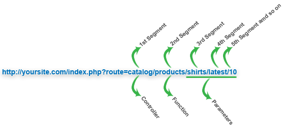

Anatomy of EZPHP URLs
.
Before you start developing an application using EZPHP, you need to understand how the EZPHP
URLs are constructed. EZPHP employs segment-based approach to URLs which is search-engine
as well as human friendly. Basically there can be be three segments in each EZPHP URL.
- Controller (1st segment - The controller name)
- Function (2nd segment - The function of the controller to be run)
- Parameter(s) (3rd segment and beyod - Parameters to be passed to the function)
Here is the structure of a typical EZPHP URL:
http://yoursite.com/index.php?route=controller/function/parameters

In the above scorpion picture, catalog is controller, products is the function name to be called present in the catalog controller and shirts, latest and 10 are parameters passed to the products function.
For the homepage, you can construct a URL like this:
http://yoursite.com/index.php?route=home
Or simply
http://yoursite.com/index.php
If you don't specify a controller name in the URL, the default controller which is set from config/config.php
file, will be used. Similarly, if you don't specify the second URL segment (ie function), the default function index()
will be used. Finally, if you don't specify the third (or more) URL segment (ie parameters), no parameters will be passed to the function.
.
Search Engine Friendly URLs
.
For every file to be viewed, the EZPHP uses a single point of entry file index.php present in the root folder.
This is where all access to the application is controlled from. To maintain this single point of entry, htaccess
can be put to use and make sure no other file can be accessed and hide the index.php file from the url. Doing this will create
search engine and user friendly URLs.
The htaccess file should contain the following:
RewriteEngine on
RewriteCond %{REQUEST_FILENAME} !-f
RewriteCond %{REQUEST_FILENAME} !-d
RewriteRule ^(.*)$ index.php?route=$1 [L,QSA]
| Normal URL | Search Engine Friendly URL |
| www.yoursite.com/index.php?route=contact_us | www.yoursite.com/contact_us |
| www.yoursite.com/index.php?route=contact_us/submit_form | www.yoursite.com/contact_us/submit_form |
| www.yoursite.com/index.php?route=catalog/products/shirts/latest | www.yoursite.com/catalog/products/shirts/latest |
.
URL Suffix
.
EZPHP allows you to add a suffix to your URLs. This can be done from the
config/config.php file below the url section. Doing this
will make your pages appear of specified type. Let's say you have specified a suffix of
.html then URLs can be served like this too:
http://yoursite.com/index.php?route=catalog/product.html
http://yoursite.com/index.php?route=contact_us.html
Please note that page type won't be changed, it would simply add the suffix. Also note that
when you add a suffix, it is good idea that you hide the index.php part
from your URLs so that pages look only of specified type and consistent. You can hide the
index.php part from URLs using .htaccess with some simple
rules like this:
http://yoursite.com/index.php?route=contact_us.html
RewriteEngine on
RewriteCond %{REQUEST_FILENAME} !-f
RewriteCond %{REQUEST_FILENAME} !-d
RewriteRule ^(.*)$ index.php?route=$1 [L,QSA]
Because index.php is main entry point to entire framework, you can not add
a URL suffix to it; for example, following URL won't work:
http://yoursite.com/index.html
If you are using suffix-based URLs, the hyperlink function of
URI core class will automatically add suffix to
your URLs.
.
Query Strings
.
You can specify query strings as you normally do by adding &var=value to the URLs.
Here are some examples:
http://www.yoursite.com/index.php?var=somevalue&route=catalog/products/
http://www.yoursite.com/index.php?var=somevalue&var2=somevalue2&route=catalog/products/
http://www.yoursite.com/index.php?route=catalog/products&var=somevalue
http://www.yoursite.com/index.php?var=somevalue&var2=somevalue2&route=catalog/products/
http://www.yoursite.com/index.php?route=catalog/products&var=somevalue
Note: If you are using query strings in URLs, make sure that you always
specify the route variable in your URLs to reflect the segmental approach
(controller/function/parameters) of EZPHP URLs.
→ For added convenience, EZPHP provides URI core class which helps working
with URIs easier.
.
.
.
EZPHP © 2010. All Rights Reserved.